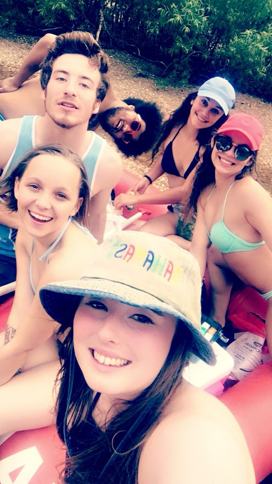

Our story
It All Started at Syberg’s
If you asked Danielle and Javon when they first met, neither could give you an exact answer. They know it was sometime in the spring of 2017, when they started working together as servers at Syberg’s, Danielle shortly before Javon. Luckily, they have a photo from a Syberg’s float trip on June 5, 2017, to help narrow things down.
They quickly became friends and enjoyed working together, whether they were sharing a section, splitting the patio, or sharing their favorite shift meal: a bacon cheeseburger with pepper jack cheese. At the time, neither knew that a few years of shared shifts and work adventures would eventually turn into something more.

From Coworkers to Something More
By January 2020, things were starting to change. At the Syberg’s Christmas party, Danielle finally admitted that she’d like to spend some time with Javon outside of work. As it turns out, Javon had been thinking the same thing.
They started spending more time together, and on February 22, 2020, they officially became a couple. Not long after, the world shut down, giving them plenty of unexpected time to get to know each other outside of work.
While everyone else was figuring out what to do with quarantine, Danielle and Javon kept busy with camping trips, board games, puzzles, painting, and exploring the parks around St. Louis. By the end of the year, Danielle had moved in with Javon, and they were officially building a life together.
Building a Life Together
Since then, there’s been no shortage of adventures. They’ve bought their first home, changed jobs, traveled to new places, gone camping, started gardening, attended concerts and sporting events, and spent countless weekends with friends and family.
Their household has also grown quite a bit along the way. Stormy was their first addition, followed by Loki, Holly, and eventually Kaido, their very opinionated Shiba Inu. There have been plenty of muddy paws, pet hair, road trips, and entertaining moments along the way.
Of course, life hasn’t always been sunshine and vacation photos. They’ve navigated career changes, family challenges, and the loss of loved ones and beloved pets. Through the good years and the difficult ones, they’ve continued to support each other, make plans, and find plenty of reasons to laugh.
Somewhere along the way, they also discovered that their favorite adventures don’t necessarily have to involve traveling far. Sometimes the best days are spent at home, working in the garden, hanging out with the dogs, or enjoying time with the people they love.
The Next Chapter
After years of building a life together, Danielle and Javon got engaged in July 2025 and began planning their next big adventure: a wedding!
They eventually found the perfect place to celebrate, Piper Palm House in Tower Grove Park. It’s a pretty special location, considering Tower Grove Park was one of the places they spent time together during the early days of their relationship.
From two coworkers sharing a shift meal to a couple preparing to get married, they’ve come a long way. They’ve built a home, grown a family, made countless memories, and learned that life rarely goes exactly according to plan.
On March 27, 2027, they’ll get to celebrate everything they’ve built with the people who have been part of their journey.
They may not remember the exact shift when they first met, but they’re pretty happy it happened. And they’re even happier they get to keep figuring out the rest together.
The best part is that this is only the beginning.